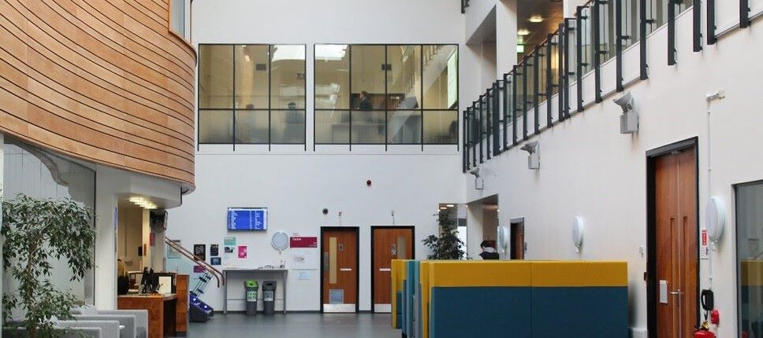

Information for staff
News
Cantor College recently hosted the Software Engineering student of the year awards. Short-listed candidates from around the country attended the one day event
Academic Registry
For academic regulations, assessment, awards, student records and course validation.
Catering Services
Contact the Catering Services regarding on and off-site catering.
Financial Services
The financial team based on the 2nd Floor are responsible for all areas of student finance as well as College budgeting.
Information Systems Services
The ISS team delivers the College’s computing facilities including all hardware and software. They also run the staff helpdesk.
Marketing Services
The Marketing Team will help promote events and new courses. They will help with press release preparation.
Personnel Services
All staff pay and conditions enquiries should be directed to the Personnel Services team on the 3rd floor
Facilities
The facilities are responsible for the general care and maintenance of the College. All enquiries via the main helpdesk.